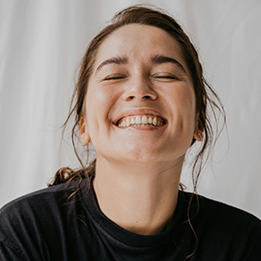
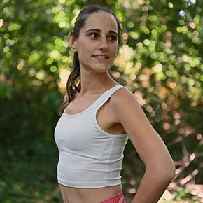
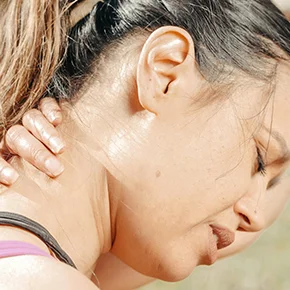
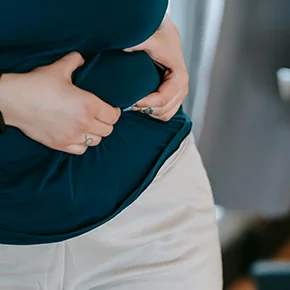
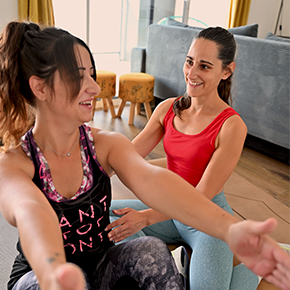

Une Femme, Une Écoute, Un Nouveau Départ
Je t'écoute et je t'accompagne à ton rythme, pour te sentir mieux dans ton corps et retrouver confiance en toi
Coaching 100 % à domicile, chez toi - 50 % de crédit d'impôt
Réserve ton appelSéances individuelles à domicile : 50 % de crédit d'impôt
Te reconnais-tu encore dans le corps que tu as aujourd'hui ?
- Fatigue au quotidien
- Plus de temps pour toi
- Confiance qui vacille
- Poids qui s'installe petit à petit
- Perte de force et d’autonomie
Tu n'es pas seule.
Réserve ton appel
Bouge ton corps, transforme ta vie
- Un accompagnement 100% personnalisé
- À ton rythme, sans jugement, adapté à tes contraintes
- Pour retrouver énergie, confiance, et te sentir bien dans ton corps, à ton rythme, avec du temps pour toi
Réserve ton appel
Imagine-toi dans quelques mois...
- Plus d'énergie au quotidien
- Un corps plus léger, plus tonique
- Une confiance retrouvée
- Enfin du temps pour toi
Réserve ton appel

Je suis jessica PAPIN, et je suis là pour toi
Coach sportive pour femme à Sévremoine et autour
Prendre la décision de changer, ce n'est jamais simple. On sent son corps fatiguer, sa confiance baisser… et on hésite. C'est là que je suis là pour toi.
Mon rôle, t'aider à comprendre ce qui te freine, et t'accompagner vers un corps qui bouge mieux, qui fait moins mal, dans lequel tu te sens enfin bien.
- Je me déplace directement chez toi
- 50 % du coût des séances à domicile est remboursé en crédit d'impôt
- Un accompagnement sur-mesure, à ton rythme, sans jugement
C'est peut-être le début d'un vrai changement pour toi.
Réserve ton appel

Comment je peux t'aider à retrouver confiance et vitalité
Perte de masse musculaire et mobilité

En vieillissant, on perd naturellement de la masse musculaire, et avec elle un peu de force, de stabilité et de mobilité. C'est souvent à ce moment-là que les douleurs et les raideurs articulaires commencent à s'installer, et beaucoup de mes clientes viennent me voir pour cette raison.
Je te propose des exercices ciblés pour préserver et renforcer ta masse musculaire, améliorer ta mobilité et soulager tes articulations, tout en respectant ton rythme et tes limites, sans jamais te mettre en difficulté.
Retrouver un poids qui te convient

Porter un poids qui pèse sur ton énergie et ta santé, ça peut changer. Ensemble, nous mettons en place une stratégie personnalisée pour t'aider à te sentir mieux, progressivement et durablement, tout en respectant tes capacités.
Une image positive
Quand on ne se sent plus soi-même, la confiance peut s'effriter. Ensemble, on la reconstruit pas à pas, grâce à des objectifs atteignables et des progrès que tu ressens dès les premières semaines.
Chez toi, à ton rythme

Toutes les séances ont lieu à ton domicile, sans trajet ni salle de sport. 50 % de crédit d'impôt sur le montant de tes séances, sous conditions et selon ta situation fiscale.
Avis coach sportive sevremoine
Est-ce que ce coaching sportif est fait pour moi ?
- Tu es une femme
- Tu souhaites retrouver de la mobilité, totale ou partielle, et te sentir plus à l'aise dans ton corps
- Tu veux retrouver confiance en toi et améliorer ton estime de toi-même
- Tu ressens des douleurs physiques
- Tu souhaites mieux gérer ton poids, perdre du poids et retrouver une silhouette qui te fait du bien
- Tu souhaites te muscler et être moins essouffler
- Tu es prête à te lancer, à changer tes habitudes et à prendre soin de toi
- Tu souhaites un accompagnement personnalisé et humain
« L'avenir dépend de ce que nous faisons dans le présent »
Mahatma Gandhi
Réserve ton appel
Séances individuelles à domicile : 50 % de crédit d'impôt